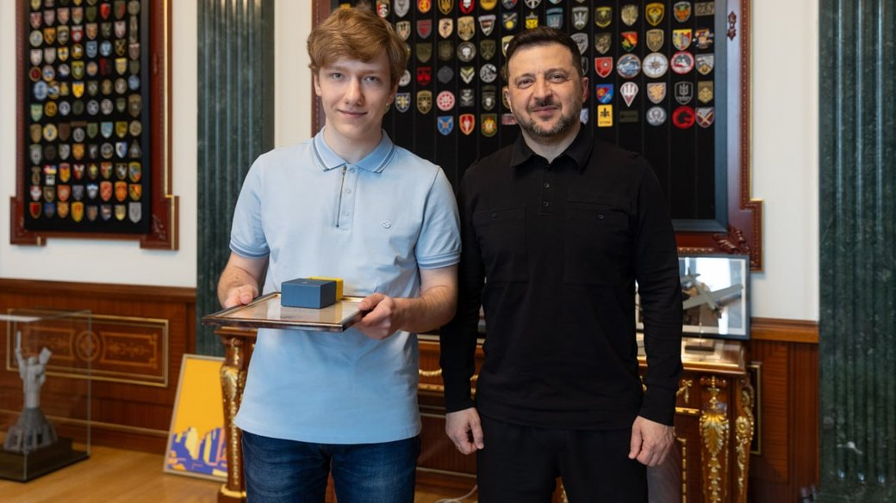
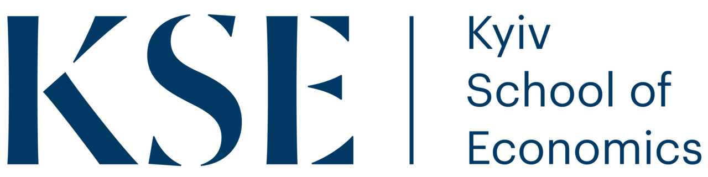
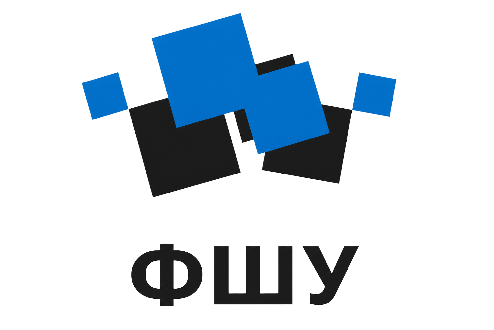
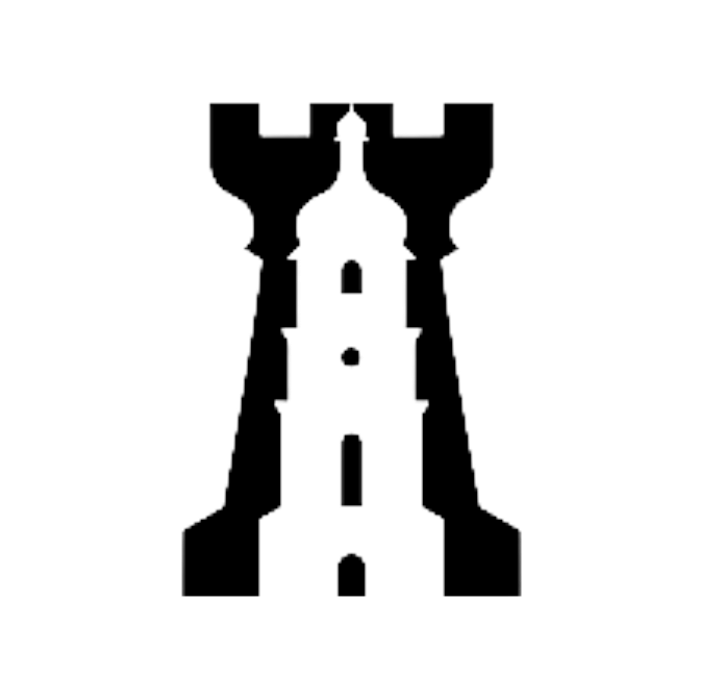
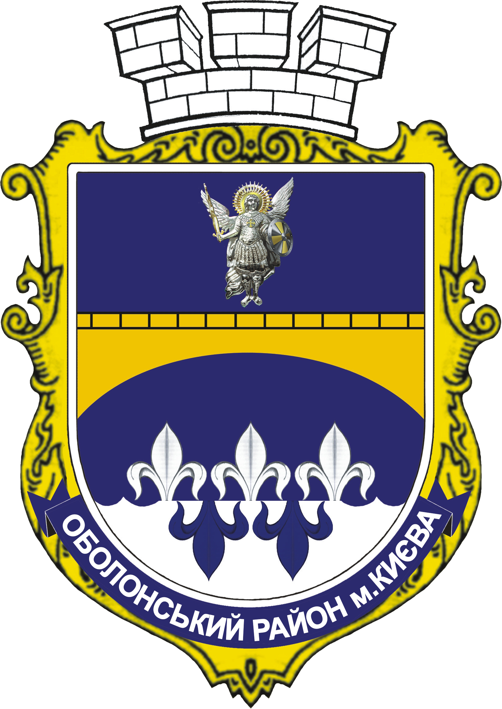
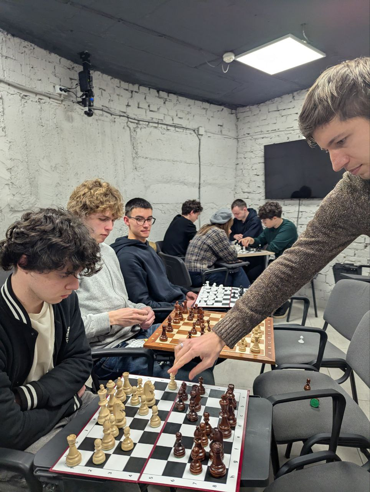
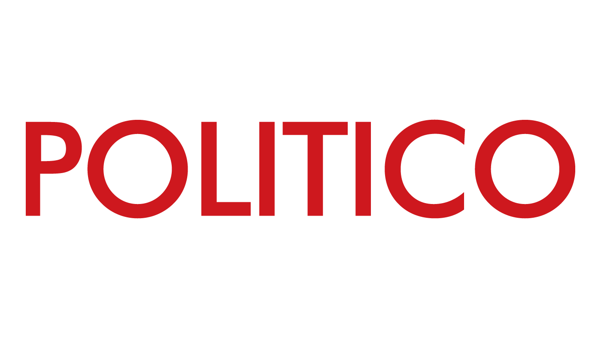
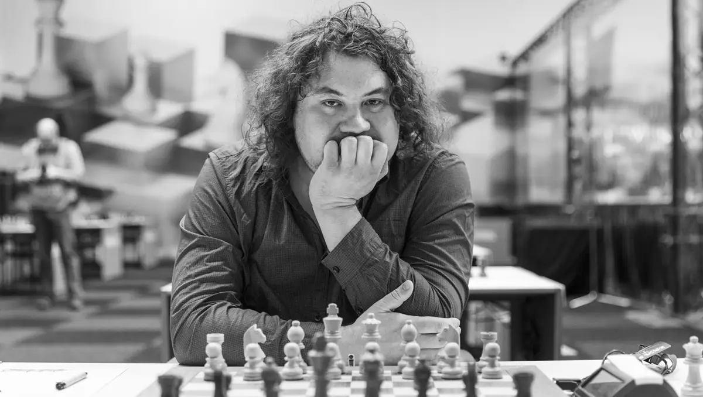
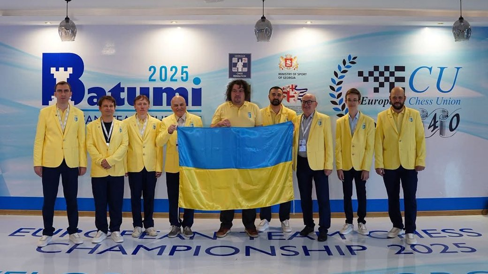

EP. 01 Квітень 2026KHARKIV · UAFUTURE OF UA
Роман Дегтярьов отримав нагороду «Майбутнє України»
17-річний шахіст із Харкова — за внесок у розвиток українських шахів та утвердження проукраїнської позиції на міжнародній арені.

KSE × Chess — Kyiv School of Economics
KSE Chess Hub — екосистема розвитку українських шахів при Київській школі економіки. Ми будуємо середовище, де талановиті молоді шахісти отримують тренування, підтримку та спільноту — і залишаються перемагати тут, в Україні.
Дізнатись більше01 — Локація
Новий кампус Київської школи економіки на Оболоні стане домом для KSE Chess Hub: тренувань, турнірів і спільноти.
02 — Партнери
Тут буде логотип головного донора KSE Chess Hub, з яким ми розділяємо спільне бачення.



Рейтинг FIDE
| 1 | Китай | 2574 |
| 2 | Індія | 2556 |
| 3 | США | 2546 |
| 4 | Росія | 2507 |
| 5 | Україна | 2503 |
| 6 | Франція | 2485 |
| 7 | Німеччина | 2484 |
| 8 | Польща | 2469 |
FIDE Top Federations Mixed — Січень 2026. Це не спадщина минулого — це результат, який потрібно утримати й посилити.
03 — Шахи під час війни
Після початку повномасштабного вторгнення 110 українських шахістів змінили федерацію, під прапором якої виступають. 60% із них — до 18 років. Це не просто статистика — це втрата цілого покоління.
Україна стикається з системними проблемами у шаховій сфері: виїзд талановитої молоді за кордон, відсутність українськомовної шахової літератури, жодного великого міжнародного турніру в країні, жодного шахового хабу в Києві — і все це на тлі агресивного впливу Росії через інституції FIDE.
Тотальний брак матеріалів для навчання: нуль книг українською мовою для високого рівня гри — тоді як російською їх тисячі. Покоління українських шахістів досі змушене вчитися мовою агресора, бо альтернативи просто не існує.
І водночас — українські шахісти продовжують перемагати.
04 — Новини

EP. 01 Квітень 202617-річний шахіст із Харкова — за внесок у розвиток українських шахів та утвердження проукраїнської позиції на міжнародній арені.
 EP. 02
Квітень 2026
EP. 02
Квітень 2026
На міжнародній універсіаді Collegiate Chess League команда KSE Chess Club перемогла команду A Єльського університету із розгромним рахунком 10,5 — 5,5 — підтвердивши рівень української студентської шахової школи на міжнародній арені.
 EP. 03
Серпень 2025
EP. 03
Серпень 2025
Топ-1 шахіст України здобув перемогу із вражаючим результатом 10,5 із 11 можливих очок — підтверджуючи свій статус провідного гросмейстера країни.

EP. 04 Грудень 2025Війна не зупиняє шахи. Тренування KSE Chess Hub продовжуються навіть під час повітряних тривог — у безпечному укритті разом із тренером клубу.

EP. 05 Квітень 2026Авторитетне видання Politico Europe опублікувало матеріал про перемогу України над Росією у Спортивному арбітражному суді (CAS) — прецедент, що стосується і шахів.

EP. 06 Січень 2026Антон Коробов переміг на престижному турнірі Marienbad Open 2026, підтвердивши, що українські шахи залишаються у світовій еліті.

EP. 07 Жовтень 2025Збірна України з шахів здобула золото на Командному чемпіонаті Європи 2025 у Батумі. Чоловіча збірна підтвердила статус найсильнішої команди континенту, а жіноча — здобула срібло.
05 — Обличчя хабу
Ігор Коваленко — топ-1 шахіст України, гросмейстер, чемпіон Європи 2025 у складі української збірної. З 2022 року — військовий. Захищає Україну від російської агресії та одночасно бере участь у щотижневих турнірах Titled Tuesday, змагаючись із найсильнішими шахістами світу — буквально з окопу.
Шахіст України
Гросмейстер
Чемпіон Європи у складі збірної
Військовий. Захисник.
06 — Команда
Головний тренер клубу
Топ-1 український гросмейстер, чемпіон Європи 2025 у складі збірної, військовий.
Тренер
Міжнародний майстер із багаторічним досвідом тренерської та організаторської роботи, зокрема тренування університетських шахових команд.
Організація
Студентська команда, що забезпечує організаційну діяльність Хабу — від тренувань до турнірів.